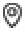
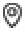

禅意人生
 当前位置： 首页> 参悟云居> 禅意人生
当前位置： 首页> 参悟云居> 禅意人生
人生如茶,空杯以对
类别: 禅意人生 发布时间: 2015年01月14日
唐末五代时期，群雄逐鹿，硝烟四起。闽王为了收服人心，祈求江山永固，也为了忏悔滥杀无辜的恶业，开始笃信佛教。他曾创下剃度两万人的壮举，并先后拜请雪峰义存、鼓山神晏、武夷扣冰诸大禅师出任国师，为其开示佛法，指点迷津。
公元928年的一天，闽王在福州西湖拜见扣冰古佛，叩请治国方略。
无论闽王如何好语讨巧，扣冰古佛一直保持沉默，只顾喝茶。
尽管闽王不爱喝茶，扣冰古佛仍然不时往闽王的杯子里添茶。
眼看着闽王杯子里的茶水溢出，扣冰古佛仍然不时往闽王的杯子里添茶。
闽王看见茶水流满桌面，一脸讶异，便问：“师父，杯子已经满了，为什么还要添茶呢？”
扣冰古佛依然沉默，继续为他添茶。
闽王似有所悟，便把杯子里的茶一口喝干。
扣冰古佛还是把闽王的茶杯满上，问：“你会喝茶吗？”
闽王回答：“不会。”
扣冰古佛说：“那就先学喝茶吧。”
闽王纳闷地问：“喝茶还要学吗？”
扣冰古佛说：“你的心就像这个杯子一样，已经装得满满当当的了，不把茶喝掉，不把杯子倒空，如何装得下别的东西呢？”
如是，闽王终于明白此中禅意，恍然大悟，从此开始研习茶道，并从喝茶中悟得治国之道。
可不是吗？只有空的杯子才可以装水，只有空的房子才可以住人，只有空谷才可以传声……每一个容器的利用价值在于它的空。
有道是：海纳百川，有容乃大；海阔凭鱼跃，天高任鸟飞。空是一种度量和胸怀，空是有的可能和前提，空是有的最初因缘，因此，佛经里常有“一空万有”“真空妙有”之说。可见空是人生的最高境界。
人生如茶，空杯以对，就有喝不完的好茶，就有装不完的欢喜和感动。